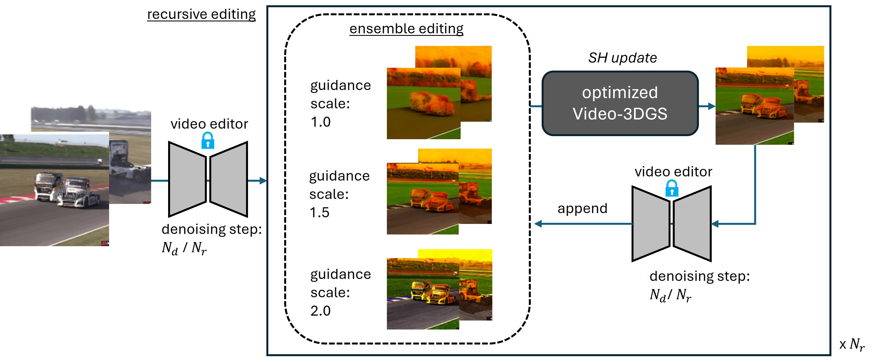

Video Reconstruction
Video-3DGS for reconstructing videos
We introduce Video-3DGS, an innovative two-stage approach tailored for editing dynamic monocular videos by reconstructing them with 3DGS.
Video-3DGS (1st stage) aims to reconstruct the videos with 3DGS. It is empowered by the proposed MC-COLMAP, a modified version of COLMAP, applied to videos in a Masked and Clipped manner. We employ an open-vocabulary video segmenter to extract segmentation masks for foreground moving objects and divide long video sequences into shorter clips to minimize motion within each clip. This enables COLMAP to focus on foreground objects within each clip, effectively generating 3D points for them. Meanwhile, the cluttered background is modeled with spherical-shaped random 3D points, surrounding the pre-extracted 3D points of foreground moving objects. For each video clip, Video-3DGS utilizes two sets of 3D Gaussians (Frg-3DGS and Bkg-3DGS) to represent foreground and background 3D points, respectively. Afterwards, a 2D learnable parameter map is adopted to merge the foreground and background views rendered from each set of Gaussians. The resulting merged views faithfully represent the video frames.
Video-3DGS (2nd stage) focuses on seamlessly integrating a pre-optimized Video-3DGS into existing zero-shot video editors. The primary advantage of using a pre-optimized Video-3DGS lies in its ability to apply structured constraints of 3D Gaussians across multiple video frames. More specifically, we maintain the structural components of Frg-3DGS and Bkg-3DGS in a fixed state while selectively fine-tuning the color parameters, such as spherical harmonic coefficients, alongside a 2D learnable parameter map. This fine-tuning process is designed to capture and replicate the style of the initially edited video frames.
Video-3DGS for reconstructing videos
Video-3DGS for editing videos
We have also observed that existing zero-shot video editors exhibit sensitivity to variations in parameters, such as the number of denoising steps and the scale of image or text guidance. These variations can significantly impact the editing outputs To optimize effectiveness and reduce parameter sensitivity, we introduce a recursive and ensembled video editing strategy, which we call it as Video-3DGS (RE). Click below black box to check video results of Video-3DGS (RE).
 Qualitative Results of Video-3DGS with Recursive and Ensembled refinementQ) Could we provide additional video reconstruction results with recent SoTA on DAVIS dataset?
Visual comparison with Deformable-3DGSQ) Could we provide more reconstruction results in another dataset?
Results on HyperNeRF datasetQ) How does 2D learnable mask work?
Visualization on 2D Learnable MasksQ) How does spatial decomposition work?
Visualization on Spatial DecompositionQ) What is the relationship between reconstruction and editing?
Visualization of Relationship between Reconstruction and EditingUnlike other conventional neural representation papers, our work does not explore the task of novel view synthesis. Instead, our method focuses on video reconstruction and editing by encoding and fitting videos with 3DGS. Nevertheless, we also conducted a toy demo showing that Video-3DGS keeps enhancing the temporal consistency and maintaining editing results during random camera movement as below video. It motivates us to extend Video-3DGS to be developed as a fundamental framework for 4D novel view synthesis in future research.
@article{shin2024video3dgs,
author = {Inkyu Shin, Qihang Yu, Xiaohui Shen, In So Kweon, Kuk-Jin Yoon, Liang-Chieh Chen},
title = {Enhancing Temporal Consistency in Video Editing by Reconstructing Videos with 3D Gaussian Splatting},
year = {2024},
}